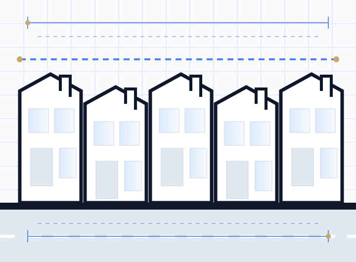

Borough-specific policy
Each borough has its own local plan and residential extension design guidance. We design to the guidance your borough publishes rather than to national defaults.
Side-return extensions, loft conversions, flat conversions and change-of-use schemes — drawn with the borough's own policies in mind, not a generic national template.

London is not one planning authority. It is thirty-two boroughs plus the City, each with its own local plan, its own supplementary design guidance, and its own habits about what it will and will not support. A rear extension that sails through in Bromley can be refused in Camden on the same drawings.
We produce drawing packages for homeowners, landlords and developers across Greater London, and we start every project by reading the policy that will actually be applied to it — the borough's residential design guide, its conservation area appraisals, and any Article 4 directions covering the address.
The defining London project is the side-return extension: filling in the narrow strip of alley beside a Victorian or Edwardian terrace to widen the ground floor. It transforms a dark galley kitchen into a genuinely usable space, and it is technically awkward — the new structure has to meet the existing flank wall, the party wall almost always triggers a Party Wall Act notice, and daylight to the middle of the plan has to be designed for rather than hoped for.
Loft conversions are the second staple. Rear dormers on terraced houses are frequently permitted development, but a great many London streets sit within conservation areas or under Article 4 directions where those rights have been removed, and mansard roofs — common and often actively encouraged in some central boroughs — almost always need full planning permission.
Flat conversions and HMOs are the third strand. London has the deepest rental market in the country and correspondingly the most detailed licensing and amenity standards, which vary sharply between boroughs. Several operate additional or borough-wide licensing schemes on top of mandatory HMO licensing.
The constraints we check before starting design work on any project in Greater London.
Each borough has its own local plan and residential extension design guidance. We design to the guidance your borough publishes rather than to national defaults.
London has an exceptionally high density of conservation areas. Within them, permitted development is curtailed and materials, fenestration and roof alterations are scrutinised closely.
Widely used across London to remove permitted development rights, particularly for HMO conversions and rear extensions in designated areas. We confirm the current position for your specific address.
Terraced and semi-detached work almost always engages the Party Wall etc. Act 1996. Our drawings support the notices your surveyor will need to serve.
Several boroughs operate specific and restrictive basement development policies covering depth, extent and construction method statements.
The London Plan applies minimum internal space standards to new dwellings, which is decisive for flat conversion viability.
We deliver projects across London and Greater London remotely, working from measured information, existing drawings and photographic surveys. Where a full measured survey is required we will tell you at the outset and agree it before starting.
Check your postcode →Local answers for property owners and developers in London.
Yes. We work across all thirty-two London boroughs and the City of London. Because each borough applies its own local plan and design guidance, we check the relevant policy and any Article 4 directions for your address before starting design work.
Many single-storey side-return extensions fall within permitted development, but the allowances are tight on attached houses and are frequently removed in conservation areas and under Article 4 directions, which are common across inner London. Flats have no permitted development rights at all. We confirm the position for your property before designing.
The statutory target for householder applications is eight weeks from validation, and most boroughs work broadly to it, though busy authorities frequently request extensions of time. Validation itself can add a week or two if drawings are incomplete, which is the main delay we design out.
Yes. Conservation area work needs drawings that address materials, window detailing, roof form and the character described in the area appraisal. We prepare drawings and supporting design information tailored to those requirements.
We deliver most projects remotely using measured information, existing drawings and photographic surveys, which keeps costs down. Where a full measured survey is needed we can arrange one — we will tell you at the outset which your project requires.
Share your address, project type, existing drawings and preferred timing. We will review the information and explain the most suitable next step.
We work remotely with clients nationwide. Pick your area for local planning guidance.